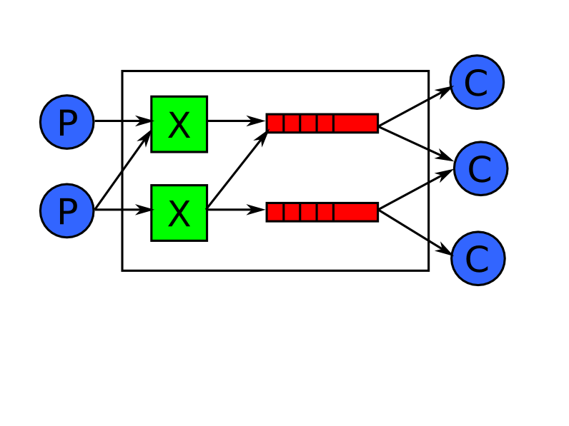
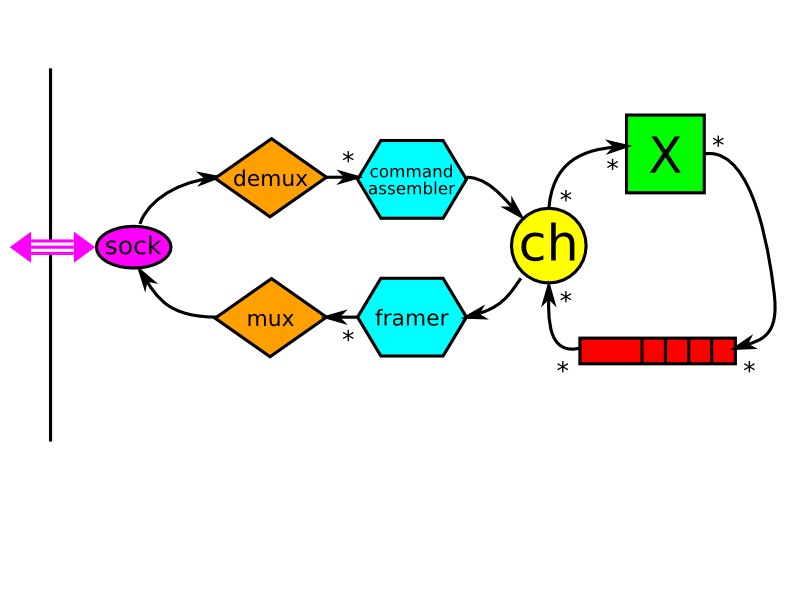
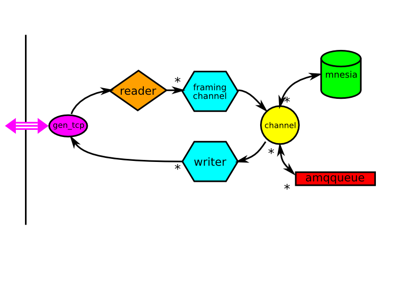
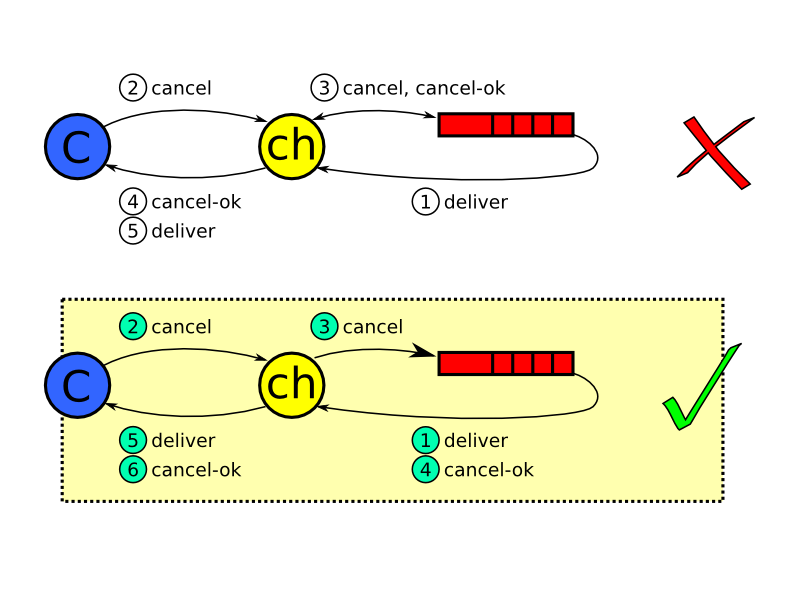
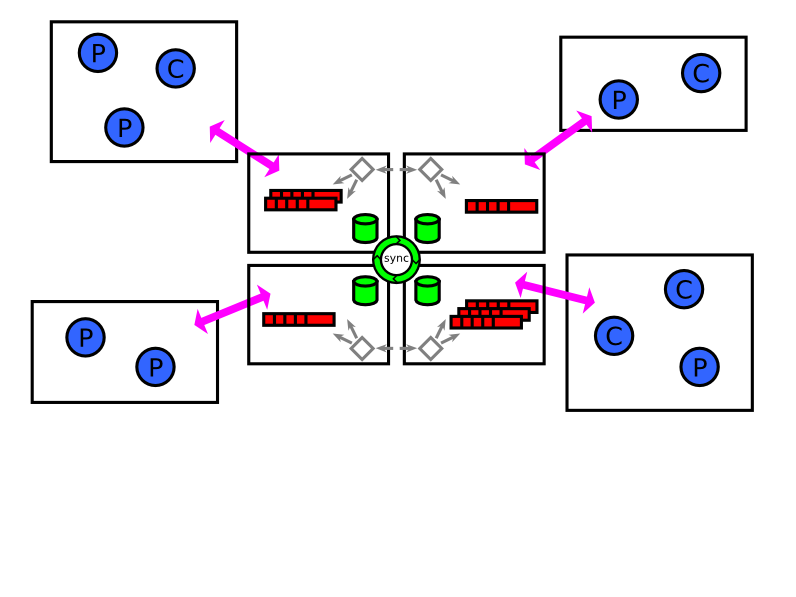

RabbitMQ
Open-Standard Business Messaging
in 5000 lines of Erlang
Matthias Radestock
Tony Garnock-Jones
LShift Ltd.
{matthias,tonyg}@lshift.net
- Welcome
- introduce Tony, me - role, affiliation
- We developed a product called RabbitMQ, a business
messaging broker written in Erlang/OTP
- Contents: our experience, why Erlang/OTP
Outline
- Introduction to AMQP
- RabbitMQ
- Why Erlang/OTP?
- Roadmap
- Introduction to the AMQP business messaging standard
- Introduction to RabbitMQ - our implementation of AMQP in Erlang
- main focus is answering the question "What did make Erlang/OTP a good choice for implementing RabbitMQ?"
- RabbitMQ Roadmap
The Advanced Message Queueing Protocol
The Open-Standard Protocol
for Business Messaging
- ubiquitous substrate
- integrated into a vast array of products
- used by a wide range of applications
started: 2004, first version: June 2006, latest version: February 2008
 www.amqp.org
www.amqp.org
objective best illustrated by contrasting with another
form of messaging: email
Everyone uses email without thinking, so why is commercial
business messaging - getting applications to talk to each
other - so hard?
With email we have ...
- ubiquitous substrate - email infrastructure is part of
the internet fabric; it's supported by backbone, ISPs,
your corp IT departments
- products - email clients, networking kit, spam filters
- applications - integral to many solutions (e.g. stuff
LShift have built in web space); web forms, monitoring,
bug trackers, ordering systems
We have none of these in business
messaging. Instead one has to undertake a development and
integration project every time you want to make two
applications talk to each other, not to mention trying to
do that across organisational boundaries.
Imagine what it would be like to use email if you had to
do undertake a major development project every time you
wanted to send an email to an organisation that you hadn't
dealt with before.
Yet this is exactly the situation we are in with business
messaging!
Essentially what has been missing is an open, standard
protocol that caters for the bulk of business messaging
use cases and gets widely adopted.
AMQP aims to be exactly that.
in development for ...
more information at ...
AMQP Working Group
AMQP is governed by the working group, consisting of two
kinds of members...
- vendors that produce products which
implement AMQP (more about what exactly that means in a
second)
- two groups of users - end users who develop
and deploy AMQP-based solutions and OEMs who
embed/utilise AMQP in their products and solutions.
- plus some feedback from wider community
AMQP Model

on to the technical bit...
Model - AMQP's take on the world of business messaging
- the server (aka broker)
- producer
- exchange
- binding - routing based on x type and binding
- queue - where messages live until consumed, possibly
persisted
- consumers - pull vs subscribe & push
The 'P' in AMQP
The P in AMQP
- producers and consumers are logically part of
AMQP clients
- which talk to AMQP server
- over the P in AMQP
Model and Protocol
introducing two more concepts: connections and channels
- connections - tcp connections
- channels - multiplexing logical streams of commands and data
- channels are boundary between model and protocol
- soup of exchanges, queues and bindings - i.e. the routing set up,
management of which is part of protocol - unlike
email
RabbitMQ History and Objectives
- POC - a few weeks of hacking in summer 2006
- first public release, under MPL, in Feb 2007
- four more releases since
- complete, conformant and interoperable implementation of the
published AMQP spec
- good throughput and latency
- reliable and scalable
- platform-neutral distribution, plus platform-specific packages
and bundles
- several extensions - HTTP, STOMP, XMPP, ...
- first AMQP implementation to be written from scratch from the spec
- all others were written by folks involved in the
initial specification process and during that
process
- thus RabbitMQ validates the spec; proof that it can be implemented
and interop can be achieved
- scalable - in several different ways, multi-core, cluster (more about
that later) but also size of hardware - phone, slug - 16-way
Intel.
- extensions are one area where RabbitMQ really shines ...see next
slide
RabbitMQ Universe
- native AMQP handler
- transports - extensions of the RabbitMQ server that expose the
AMQP protocol over transports other than raw
TCP/IP. Sometimes accompanied by client libraries.
- gateways - extensions of the RabbitMQ server that bridge between
AMQP and various other messaging networks
- clients - These conform to the client role of the AMQP protocol
and generally interoperate with other AMQP
brokers. light blue - developed for RabbitMQ, but work
with other brokers,
pink bits - developed by community, not necessarily for
RabbitMQ
- dual role of Erlang client
- adapters - These adapt various messaging abstraction, most of them
ESBs, to AMQP. They are typically implemented on top of one of the
AMQP client libraries, but they do not expose the AMQP functionality
directly.
Rest of talk is mainly going to focus on the server with the native
AMQP transport, so just bear in mind that there is a lot
more to RabbitMQ than the server.
Why Erlang/OTP?
- good architectural fit for AMQP
- concise
- sane concurrency
- reliable
- good performance, and it scales
- excellent management and troubleshooting support
- we can hide it
Why Erlang/OTP?
- good architectural fit for AMQP
- concise
- sane concurrency
- reliable
- good performance, and it scales
- excellent management and troubleshooting support
- we can hide it
AMQP architecture (revisited)
- concentrate on server for rest of the talk
- similarities between structure of client and server, in particular
when it comes to protocol handling
AMQP architecture (refined)

- refine relationship between connection and the channels it
carries
- introduction of framing - AMQP commands (create queue, delete
queue, publish message, etc) are chopped up into frames
for interleaving on transport - useful for e.g. large
messages
RabbitMQ server design

- domain of discourse of AMQP is very simiilar to Erlang/OTP
- actual implementation is identical to architecture
- each of the nodes corresponds to a separate Erlang module, and
process (taking into account the multiplicities)
- only two minor exceptions - mux, which is handled as part of
gen_tcp, and mnesia, which is a collection of processes
Why Erlang/OTP?
- good architectural fit for AMQP
- concise
- sane concurrency
- reliable
- good performance, and it scales
- excellent management and troubleshooting support
- we can hide it
quick summary of previous few slides:
- very natural mapping from the AMQP logical architecture to the
Erlang-based design of RabbitMQ
- naturalness of the mapping results in small, readable codebase
where there is a direct correspondence between AMQP
features and code fragments
- this makes the code easy to understand, modify and extend - keep
up with evolution of spec, try experimental features,
build extensions (recall that this is a major focus
for RabbitMQ)
- success story - Erlang novices in the community have built small
extensions
- So how small is the code base, really? Here are some stats ...
Look, it is tiny!
from left to right:
- networking stack on top of gen_tcp - mostly generic, i.e. not
RabbitMQ-specific
- reader - dealing with AMQP connection management, demux, error
handling
- framing channel and writer - codec; mostly auto-generated from
spec
- channel, amqqueue, exchanges/routing (on top of mnesia) - the
AMQP model
also
- clustering - more about that later
- persistence - messages can be stored durably on disc and surivive
broker restarts
- management - CLI for administering RabbitMQ
- deprecated code is realms and tickets; will disappear from spec
soon
summary - ~5000 LOC
but this is not just down to the naturalness of the mapping between
the AMQP architecture and RabbitMQ design. Erlang language
features play a big part too. Some examples of that next ...
Binaries
decode_method('basic.publish',
<<F0:16/unsigned,
F1Len:8/unsigned, F1:F1Len/binary,
F2Len:8/unsigned, F2:F2Len/binary,
F3Bits:8>>) ->
F3 = (F3Bits band 1) /= 0,
F4 = (F3Bits band 2) /= 0,
#'basic.publish'{ticket = F0,
exchange = F1,
routing_key = F2,
mandatory = F3,
immediate = F4};
even shorter in R12
This is some of the auto-generated code; decoding an AMQP method frame
into an Erlang data structure
- length prefixed strings
- bits (which is what gets shorter in R12)
It is hard to see how this could be any more concise.
AMQP has 87 methods - yet the auto-generated codec - for both decoding
and encoding is only 1150 LOCs; that's just 13 LOCs per method.
Going the other way - packing terms into a binary blob, rather than
unpacking - uses exactly the same syntax, and is just as smooth.
List Comprehension and HOF
upmap(F, L) ->
Parent = self(),
Ref = make_ref(),
[receive {Ref, Result} -> Result end
|| _ <- [spawn(fun() -> Parent ! {Ref, F(X)} end)
|| X <- L]].
- While a lot of code for a presentation, it is not a lot for what
it does!
- upmap - unordered parallel map
- safe_pmap_set_ok - use upmap to build a higher level tool for
distributed programming
Why Erlang/OTP?
- good architectural fit for AMQP
- concise
- sane concurrency
- reliable
- good performance, and it scales
- excellent management and troubleshooting support
- we can hide it
half-way point - before moving on to the next factor that lead us to
choosing Erlang/OTP, a quick break for questions
deals with concurrency arising naturually from AMQP really well
order preservation
- AMQP stipulates end-to-end preservation of order in the simple case a
producer sending messages to a consumer via a single
exchange and queue
- Erlang ordering guarantee: order of messages is preserved between
any pair of processes
- This gives us the AMQP ordering guarantees for free; even though all
messaging is asynchronous
- flow of messages through the system, with order-preserving
buffering at various stages
effect visibility guarantees
warning - this is quite detailed and technical
One area that requires careful handling though is controlling the
visibility of effects of commands, i.e. when a client issues
a command and gets a reply, it subsequently shouldn't
receive any data that is inconsistent with that command
having been completed.
That all sounds fairly complicated and theoretical, so here is a
concrete example
If you were consuming from a queue, and you've decided to cancel
that subscription, the server better not send you any messages after
it's told you that you've been unsubscribed.
gen_server's calls use selective receive - the only way of
reordering Erlang's buffered messages!
The problem here is that the channel made a synchronous call to the
queue. The cancel-ok reply ends up overtaking the deliver.
effect visibility guarantees

The solution is to ditch the synchronous call in favour of
asynchronous communication. This is a pretty common thing to do in
Erlang.
This is easily done in Erlang, even though it does make the code
slightly more complicated
Now the ordering between deliver and cancel-ok is preserved
Why Erlang/OTP?
- good architectural fit for AMQP
- concise
- sane concurrency
- reliable
- good performance, and it scales
- excellent management and troubleshooting support
- we can hide it
quick recap of reasons so far for using Erlang/OTP in RabbitMQ
- good architectural fit with AMQP
- small code base due to fit + Erlang features
- nice way handling of AMQP concurrency by Erlang/OTP
Another major reason for using Erlang/OTP is that it has been designed
for building highly reliable systems
In part this is due to Erlang/OTP features such as process linking
and supervision hierarchies
Links, exit traps, and supervisors
- noticing death
- cleaning up
- if possible, restarting
- groups of processes that live and die together - around channel,
around reader
Why Erlang/OTP?
- good architectural fit for AMQP
- concise
- sane concurrency
- reliable
- good performance, and it scales
- excellent management and troubleshooting support
- we can hide it
Exploiting Parallelism
three different areas of parallelism that arise naturually from AMQP
and that RabbitMQ is exploiting
- 8-stage pipeline end-to-end between producer and consumer
- parallelism across connections and channels - with
queues acting as synchronisation points (queues are about
the only stateful part of the core AMQP model)
- queues as active processes
Clustering - Logical View
Clustering - Realisation

Why Erlang/OTP?
- good architectural fit for AMQP
- concise
- sane concurrency
- reliable
- good performance, and it scales
- excellent management and troubleshooting support
- we can hide it
- for free, almost
- the Erlang shell in conjunction with the myriad of OTP tools to
inspect, trace, profile, debug, modify a running system
- augmented by our own command line tools
...on to some examples of both...
Where has all the memory gone?
(rabbit@t)1> [{_, Pid} | _] =
lists:reverse(
lists:sort(
[{process_info(P, memory), P}
|| P <- processes()])).
[{{memory,16434364},<0.160.0>}, ...]
(rabbit@t)2> process_info(Pid, dictionary).
{dictionary,
[{'$ancestors',
[rabbit_amqqueue_sup,rabbit_sup,<0.106.0>]},
{'$initial_call',
{gen,init_it,
[gen_server,<0.138.0>,<0.138.0>,
rabbit_amqqueue_process,
{amqqueue,
{resource,<<"/">>,queue,<<"test queue">>},
false,false,[],[],none},
[]]}}]}
just tell the story
Setting up a RabbitMQ cluster
rabbit2$ rabbitmqctl stop_app
Stopping node rabbit@rabbit2 ...done.
rabbit2$ rabbitmqctl reset
Resetting node rabbit@rabbit2 ...done.
rabbit2$ rabbitmqctl cluster rabbit@rabbit1
Clustering node rabbit@rabbit2 with [rabbit@rabbit1] ...
done.
rabbit2$ rabbitmqctl start_app
Starting node rabbit@rabbit2 ...done.
rabbit2$ rabbitmqctl status
Status of node rabbit@rabbit2 ...
[...,
{nodes,[rabbit@rabbit2,rabbit@rabbit1]},
{running_nodes,[rabbit@rabbit1,rabbit@rabbit2]}]
done.
don't talk through it
Why Erlang/OTP?
- good architectural fit for AMQP
- concise
- sane concurrency
- reliable
- good performance, and it scales
- excellent management and troubleshooting support
- we can hide it
You do not need to know anything about Erlang to use RabbitMQ
Making Erlang disappear
- AMQP is a protocol
- AMQP client libraries exist for many languages and are
broker neutral
- RabbitMQ is packaged for various platforms
- admin scripts, log files
- two aspects - one to do with the protocol, the other with the
operational side
- users write client code, typically using one the available
broker-neutral libs; they don't need to care what the
server is written in
- one still needs to get a server up and running, configure it and
look after it. Need to hide Erlang there too. Hence ...
Why Erlang/OTP? - Summary
- good architectural fit for AMQP
- concise
- sane concurrency
- reliable
- good performance, and it scales
- excellent management and troubleshooting support
- we can hide it
protocol handling is an Erlang/OTP sweet
spot
don't go through list! just mention sweet spot
What next for RabbitMQ?
- community - wiki, hg, dev list, AMQP
- AMQP test suite and interop
- modularity - packages and plugins
- more clients, adapters, gateways and transports
- features - distributed queues, federation, management
- performance improvements and bug fixes
don't go through list!
try it - we also have a public server running; join the mailing list
to report any problems, suggestions